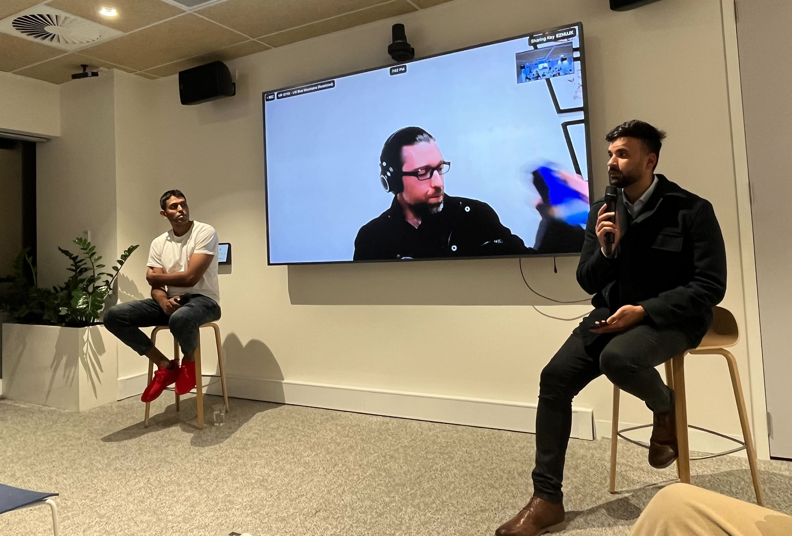

Code
%load_ext autoreload
%autoreload 2Aman Arora
July 25, 2023
Recently I presented at REA Unstack’d on Large Language Models. It was mostly a demo about a ChatBot that I’ve been experimenting with at work. This ChatBot can answer Australian property related questions and was built using publicly available data from our company - PropTrack.
Later on, we also had a panel discussion on use of LLMs for corporates. We discussed about latest research, safety, deployment & all things LLM.

Meet Sachin Abeywardana & Ned Letcher, our co-hosts.
There are many tutorials available today that showcase how to build a Q/A ChatBot, but most (if not all) use LangChain. Over the past few months, this framework has become extremely popular among all who want to play with LLMs. But, it’s source code is hard to read and if you are trying to do something that’s not within the capabilities of the framework, it becomes extremely difficult.
👉 This whole blog post is written with commit-id 24c165420827305e813f4b6d501f93d18f6d46a4
In essence, if you want to build a chatbot with LangChain, this is how it looks like:
from langchain.vectorstores.chroma import Chroma
from langchain.embeddings.openai import OpenAIEmbeddings
from langchain.text_splitter import CharacterTextSplitter
from langchain.document_loaders import DirectoryLoader, UnstructuredMarkdownLoader
from langchain.llms import OpenAI, OpenAIChat
from langchain.chains import ConversationalRetrievalChain
from langchain.memory import ConversationBufferMemory
import os
persist_directory = "db"
openai_api_key = os.environ['OPENAI_API_KEY']
loader = DirectoryLoader("../../rea-crawler/reacrawl/output/", glob="**/*.md", loader_cls=UnstructuredMarkdownLoader)
texts = CharacterTextSplitter(chunk_size=1024, chunk_overlap=128).split_documents(loader.load())
embeddings = OpenAIEmbeddings(openai_api_key=openai_api_key)
# db = Chroma.from_documents(documents=texts, embedding=embeddings, persist_directory=persist_directory)
# db.persist()
db = Chroma(persist_directory=persist_directory, embedding_function=embeddings)
memory = ConversationBufferMemory(memory_key="chat_history", return_messages=False)
qa = ConversationalRetrievalChain.from_llm(
llm=OpenAIChat(temperature=0, max_tokens=-1, model_name='gpt-3.5-turbo'),
chain_type="stuff",
retriever=db.as_retriever(),
memory=memory,
verbose=True,
)
qa.run({"question": "How has the pandemic affected the rental prices in Australia?", "chat_history": []})> /home/ubuntu/GIT_REPOS/langchain/langchain/chains/base.py(223)__call__()
221
222 pdb.set_trace()
--> 223 inputs = self.prep_inputs(inputs)
224 callback_manager = CallbackManager.configure(
225 callbacks,
ipdb> c
> /home/ubuntu/GIT_REPOS/langchain/langchain/chains/conversational_retrieval/base.py(122)_call()
120
121 pdb.set_trace()
--> 122 _run_manager = run_manager or CallbackManagerForChainRun.get_noop_manager()
123 question = inputs["question"]
124 get_chat_history = self.get_chat_history or _get_chat_history
ipdb> self.get_chat_history
ipdb> n
> /home/ubuntu/GIT_REPOS/langchain/langchain/chains/conversational_retrieval/base.py(123)_call()
121 pdb.set_trace()
122 _run_manager = run_manager or CallbackManagerForChainRun.get_noop_manager()
--> 123 question = inputs["question"]
124 get_chat_history = self.get_chat_history or _get_chat_history
125 chat_history_str = get_chat_history(inputs["chat_history"])
ipdb> n
> /home/ubuntu/GIT_REPOS/langchain/langchain/chains/conversational_retrieval/base.py(124)_call()
122 _run_manager = run_manager or CallbackManagerForChainRun.get_noop_manager()
123 question = inputs["question"]
--> 124 get_chat_history = self.get_chat_history or _get_chat_history
125 chat_history_str = get_chat_history(inputs["chat_history"])
126
ipdb> inputs
{'question': 'How has the pandemic affected the rental prices in Australia?', 'chat_history': ''}
ipdb> n
> /home/ubuntu/GIT_REPOS/langchain/langchain/chains/conversational_retrieval/base.py(125)_call()
123 question = inputs["question"]
124 get_chat_history = self.get_chat_history or _get_chat_history
--> 125 chat_history_str = get_chat_history(inputs["chat_history"])
126
127 if chat_history_str:
ipdb> n
> /home/ubuntu/GIT_REPOS/langchain/langchain/chains/conversational_retrieval/base.py(127)_call()
125 chat_history_str = get_chat_history(inputs["chat_history"])
126
--> 127 if chat_history_str:
128 callbacks = _run_manager.get_child()
129 new_question = self.question_generator.run(
ipdb> chat_history_str
''
ipdb> n
> /home/ubuntu/GIT_REPOS/langchain/langchain/chains/conversational_retrieval/base.py(133)_call()
131 )
132 else:
--> 133 new_question = question
134 accepts_run_manager = (
135 "run_manager" in inspect.signature(self._get_docs).parameters
ipdb> n
> /home/ubuntu/GIT_REPOS/langchain/langchain/chains/conversational_retrieval/base.py(135)_call()
133 new_question = question
134 accepts_run_manager = (
--> 135 "run_manager" in inspect.signature(self._get_docs).parameters
136 )
137 if accepts_run_manager:
ipdb> n
> /home/ubuntu/GIT_REPOS/langchain/langchain/chains/conversational_retrieval/base.py(134)_call()
132 else:
133 new_question = question
--> 134 accepts_run_manager = (
135 "run_manager" in inspect.signature(self._get_docs).parameters
136 )
ipdb> n
> /home/ubuntu/GIT_REPOS/langchain/langchain/chains/conversational_retrieval/base.py(137)_call()
135 "run_manager" in inspect.signature(self._get_docs).parameters
136 )
--> 137 if accepts_run_manager:
138 docs = self._get_docs(new_question, inputs, run_manager=_run_manager)
139 else:
ipdb> c
> /home/ubuntu/GIT_REPOS/langchain/langchain/chains/base.py(223)__call__()
221
222 pdb.set_trace()
--> 223 inputs = self.prep_inputs(inputs)
224 callback_manager = CallbackManager.configure(
225 callbacks,
ipdb> inputs
{'input_documents': [], 'question': 'How has the pandemic affected the rental prices in Australia?', 'chat_history': ''}
ipdb> c
> Entering new StuffDocumentsChain chain...
> /home/ubuntu/GIT_REPOS/langchain/langchain/chains/base.py(223)__call__()
221
222 pdb.set_trace()
--> 223 inputs = self.prep_inputs(inputs)
224 callback_manager = CallbackManager.configure(
225 callbacks,
ipdb> inputs
{'question': 'How has the pandemic affected the rental prices in Australia?', 'context': ''}
ipdb> c
> Entering new LLMChain chain...
Prompt after formatting:
Use the following pieces of context to answer the question at the end. If you don't know the answer, just say that you don't know, don't try to make up an answer.
Question: How has the pandemic affected the rental prices in Australia?
Helpful Answer:
> Finished chain.
> Finished chain.'The pandemic has had a mixed impact on rental prices in Australia. In some areas, particularly in major cities like Sydney and Melbourne, rental prices have decreased due to a decrease in demand caused by job losses and reduced immigration. On the other hand, in regional areas and popular holiday destinations, rental prices have increased as people seek to escape the cities and work remotely. Overall, the rental market has become more competitive, with some areas experiencing a decline in prices while others see an increase.'While it’s only a few lines of code, there is really a lot that’s going underneath. In terms of what’s going on:
Going line by line in code, DirectoryLoader loads markdown articles and partitions them using partition_md from library called unstructured.
What UnstructuredMarkdownLoader.load() does can be achieved by following code also:
4141One key difference between the two is that UnstructuredMarkdownLoader loads it as a special Document class and adds metadata such as source, filename, file_directory.
DirectoryLoader that we have used here loads all documents using loader_cls and stores them as a list.
So far so good?
The CharacterTextSplitter used above splits texts based using regex and a separator. The separator in this case is '\n\n'. Thus, anytime there are two line breaks, our text splitter will split documents. Internally, in LangChain to split a text, _split_text_with_regex is being called.
# simplified version without `keep_separator`
def _split_text_with_regex(
text: str, separator: str, keep_separator: bool
) -> List[str]:
# Now that we have the separator, split the text
if separator:
splits = re.split(separator, text)
else:
splits = list(text)
return [s for s in splits if s != ""]Next, we have to define our embedding functiont that can convert texts to embeddings. LangChain has a class called OpenAIEmbeddings.
This class get’s invoked in db = Chroma.from_documents(documents=texts, embedding=embeddings, persist_directory=persist_directory). Essentially we are creating a Chroma database from our chunks.
What goes under the hood is that after instantiating a ChromaDB collection, we use collection’s upsert method passing in embeddings and texts. Now you might ask how are these embeddings being calculated? LangChain internalls calls openai.Embedding.create.
❓ Some questions here to ask would be 1. Would results look different or better if we used Cohere Embeddings? What would be the price difference? 2. What would the quality of results be like if we used open source models like Llama-v2 released a few days ago? 3. What if we used free sentence-transformers?
Now, that we have stored our texts and embeddings in ChromaDB, for any query, we can find the most similar texts. All of this happens inside ConversationalRetrievalChain.
Essentially we created our chain as:
qa = ConversationalRetrievalChain.from_llm(
llm=OpenAIChat(temperature=0, max_tokens=-1),
chain_type="stuff",
retriever=db.as_retriever(),
memory=memory,
get_chat_history=lambda x: x,
verbose=True,
)There are two more chains inside this one chain. First is a doc_chain & the second is a condense_question_chain.
Also, previously, we did question answering by using qa.run like so - qa.run({"question": "How has the pandemic affected the rental prices in Australia?", "chat_history": []}). Instead, we could have called the Document Retrieval Chain directly too.
> Entering new LLMChain chain...
Prompt after formatting:
Given the following conversation and a follow up question, rephrase the follow up question to be a standalone question, in its original language.
Chat History:
Human: How has the pandemic affected the rental prices in Australia?
AI: The pandemic has had a mixed impact on rental prices in Australia. In some areas, particularly in major cities like Sydney and Melbourne, rental prices have decreased due to a decrease in demand caused by job losses and reduced immigration. However, in regional areas and some coastal towns, rental prices have increased as people have sought to move away from densely populated areas. Overall, the rental market in Australia has become more competitive, with some areas experiencing a decline in prices while others have seen an increase.
Follow Up Input: How has the pandemic affected the rental prices in Australia?
Standalone question:
> Finished chain.
> Entering new StuffDocumentsChain chain...
> Entering new LLMChain chain...
Prompt after formatting:
Use the following pieces of context to answer the question at the end. If you don't know the answer, just say that you don't know, don't try to make up an answer.
Question: What has been the overall impact of the pandemic on rental prices in Australia?
Helpful Answer:
> Finished chain.
> Finished chain.{'question': 'How has the pandemic affected the rental prices in Australia?',
'chat_history': 'Human: How has the pandemic affected the rental prices in Australia?\nAI: The pandemic has had a mixed impact on rental prices in Australia. In some areas, particularly in major cities like Sydney and Melbourne, rental prices have decreased due to a decrease in demand caused by job losses and reduced immigration. However, in regional areas and some coastal towns, rental prices have increased as people have sought to move away from densely populated areas. Overall, the rental market in Australia has become more competitive, with some areas experiencing a decline in prices while others have seen an increase.',
'answer': 'The overall impact of the pandemic on rental prices in Australia has been a decrease in some areas, particularly in major cities like Sydney and Melbourne. This can be attributed to factors such as reduced demand due to job losses and economic uncertainty, as well as an increase in available rental properties. However, it is important to note that rental prices can vary significantly depending on the location and type of property, so the impact may not be uniform across the entire country.'}Now, we need to look into the details as to how this all works magically and the large language model is able to provide an answer for the question at hand.
Well, as mentioned before, the ConversationalRetrievalChain consists of two chains: 1. Doc chain (Chain used to combine retrieved documents: StuffDocumentsChain) 2. Condense question chain (Chain used to update the question: LLMChain)
LLMChain
We have already covered LLMChains in our previous blog post before here. It is a pre-requisite before moving further that the readers give this blog post a read for a complete understanding of what exactly goes inside LLMChain. In essence, given a prompt template, the LLMChain can be used for text completion. LLMChains are a subclass of Chain and we also take a deep dive into everything that goes inside langchain’s Chains.
Okay, so far so good. Now that we know that the ConversationalRetrievalChain consists of two chains, how do they get called? Well, from our previous blog post on langchain, we figured that __call__ method from Chain (parent class) in turn calls _call method of child class - in this case ConversationalRetrievalChain. The _call method in this case has been implemented inside BaseConversationalRetrievalChain class. Let’s look at it’s definition.
def _call(
self,
inputs: Dict[str, Any],
run_manager: Optional[CallbackManagerForChainRun] = None,
) -> Dict[str, Any]:
_run_manager = run_manager or CallbackManagerForChainRun.get_noop_manager()
question = inputs["question"]
get_chat_history = self.get_chat_history or _get_chat_history
chat_history_str = get_chat_history(inputs["chat_history"])
if chat_history_str:
callbacks = _run_manager.get_child()
new_question = self.question_generator.run(
question=question, chat_history=chat_history_str, callbacks=callbacks
)
else:
new_question = question
accepts_run_manager = (
"run_manager" in inspect.signature(self._get_docs).parameters
)
if accepts_run_manager:
docs = self._get_docs(new_question, inputs, run_manager=_run_manager)
else:
docs = self._get_docs(new_question, inputs) # type: ignore[call-arg]
new_inputs = inputs.copy()
if self.rephrase_question:
new_inputs["question"] = new_question
new_inputs["chat_history"] = chat_history_str
answer = self.combine_docs_chain.run(
input_documents=docs, callbacks=_run_manager.get_child(), **new_inputs
)
output: Dict[str, Any] = {self.output_key: answer}
if self.return_source_documents:
output["source_documents"] = docs
if self.return_generated_question:
output["generated_question"] = new_question
return outputAs can be seen above, if chat_history exists, then the question_generator which is an LLMChain is used to create a new_question by taking in user’s original question and also by passing in chat_history_str.
from langchain.vectorstores.chroma import Chroma
from langchain.embeddings.openai import OpenAIEmbeddings
from langchain.text_splitter import CharacterTextSplitter
from langchain.document_loaders import DirectoryLoader, UnstructuredMarkdownLoader
from langchain.llms import OpenAI, OpenAIChat
from langchain.chains import ConversationalRetrievalChain
from langchain.memory import ConversationBufferMemory
import os
persist_directory = "db"
openai_api_key = os.environ['OPENAI_API_KEY']
loader = DirectoryLoader("../../rea-crawler/reacrawl/output/", glob="**/*.md", loader_cls=UnstructuredMarkdownLoader)
texts = CharacterTextSplitter(chunk_size=1024, chunk_overlap=128).split_documents(loader.load())
embeddings = OpenAIEmbeddings(openai_api_key=openai_api_key)
# db = Chroma.from_documents(documents=texts, embedding=embeddings, persist_directory=persist_directory)
# db.persist()
db = Chroma(persist_directory=persist_directory, embedding_function=embeddings)
memory = ConversationBufferMemory(memory_key="chat_history", return_messages=False)
qa = ConversationalRetrievalChain.from_llm(
llm=OpenAIChat(temperature=0, max_tokens=-1, model_name='gpt-3.5-turbo'),
chain_type="stuff",
retriever=db.as_retriever(),
memory=memory,
verbose=True,
)
qa.run({"question": "How has the pandemic affected the rental prices in Australia?", "chat_history": []})/home/ubuntu/GIT_REPOS/langchain/langchain/llms/openai.py:753: UserWarning: You are trying to use a chat model. This way of initializing it is no longer supported. Instead, please use: `from langchain.chat_models import ChatOpenAI`
warnings.warn(
> Entering new StuffDocumentsChain chain...
> Entering new LLMChain chain...
Prompt after formatting:
Use the following pieces of context to answer the question at the end. If you don't know the answer, just say that you don't know, don't try to make up an answer.
Question: How has the pandemic affected the rental prices in Australia?
Helpful Answer:
> Finished chain.
> /home/ubuntu/GIT_REPOS/langchain/langchain/chains/base.py(341)prep_outputs()
339
340 pdb.set_trace()
--> 341 if self.memory is not None:
342 self.memory.save_context(inputs, outputs)
343 if return_only_outputs:
ipdb> a
self = LLMChain(memory=None, callbacks=None, callback_manager=None, verbose=True, tags=None, metadata=None, prompt=PromptTemplate(input_variables=['context', 'question'], output_parser=None, partial_variables={}, template="Use the following pieces of context to answer the question at the end. If you don't know the answer, just say that you don't know, don't try to make up an answer.\n\n{context}\n\nQuestion: {question}\nHelpful Answer:", template_format='f-string', validate_template=True), llm=OpenAIChat(cache=None, verbose=False, callbacks=None, callback_manager=None, tags=None, metadata=None, client=<class 'openai.api_resources.chat_completion.ChatCompletion'>, model_name='gpt-3.5-turbo', model_kwargs={'temperature': 0, 'max_tokens': -1}, openai_api_key=None, openai_api_base=None, openai_proxy=None, max_retries=6, prefix_messages=[], streaming=False, allowed_special=set(), disallowed_special='all'), output_key='text', output_parser=NoOpOutputParser(), return_final_only=True, llm_kwargs={})
inputs = {'question': 'How has the pandemic affected the rental prices in Australia?', 'context': ''}
outputs = {'text': 'The pandemic has had a mixed impact on rental prices in Australia. In some areas, particularly in major cities like Sydney and Melbourne, rental prices have decreased due to a decrease in demand caused by job losses and reduced immigration. On the other hand, in regional areas and popular holiday destinations, rental prices have increased as people seek to escape the cities and work remotely. Overall, the rental market has become more competitive, with some areas experiencing a decline in prices while others see an increase.'}
return_only_outputs = False
ipdb> qConversationBufferMemory(chat_memory=ChatMessageHistory(messages=[HumanMessage(content='How has the pandemic affected the rental prices in Australia?', additional_kwargs={}, example=False), AIMessage(content='The pandemic has had a mixed impact on rental prices in Australia. In some areas, particularly in major cities like Sydney and Melbourne, rental prices have decreased due to a decrease in demand caused by job losses and reduced immigration. However, in regional areas and popular holiday destinations, rental prices have increased as people seek to escape the cities and work remotely. Overall, the rental market in Australia has become more competitive, with some areas experiencing a decline in prices while others see an increase.', additional_kwargs={}, example=False)]), output_key=None, input_key=None, return_messages=False, human_prefix='Human', ai_prefix='AI', memory_key='chat_history')> /home/ubuntu/GIT_REPOS/langchain/langchain/chains/base.py(223)__call__()
221
222 pdb.set_trace()
--> 223 inputs = self.prep_inputs(inputs)
224 callback_manager = CallbackManager.configure(
225 callbacks,
ipdb> inputs
'How has the pandemic affected the rental prices in Sydney?'
ipdb> c
> /home/ubuntu/GIT_REPOS/langchain/langchain/chains/conversational_retrieval/base.py(122)_call()
120
121 pdb.set_trace()
--> 122 _run_manager = run_manager or CallbackManagerForChainRun.get_noop_manager()
123 question = inputs["question"]
124 get_chat_history = self.get_chat_history or _get_chat_history
ipdb> inputs
{'question': 'How has the pandemic affected the rental prices in Sydney?', 'chat_history': 'Human: How has the pandemic affected the rental prices in Australia?\nAI: The pandemic has had a mixed impact on rental prices in Australia. In some areas, particularly in major cities like Sydney and Melbourne, rental prices have decreased due to a decrease in demand caused by job losses and reduced immigration. On the other hand, in regional areas and popular holiday destinations, rental prices have increased as people seek to escape the cities and work remotely. Overall, the rental market has become more competitive, with some areas experiencing a decline in prices while others see an increase.'}
ipdb> q